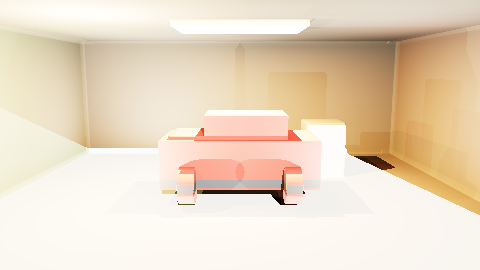
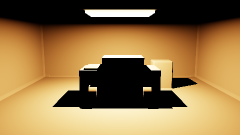
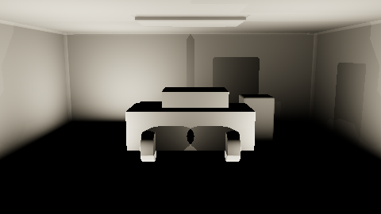
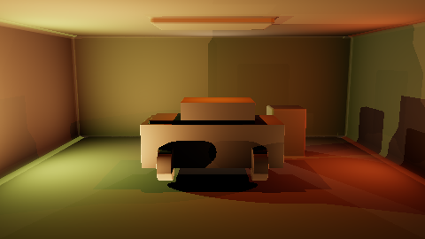
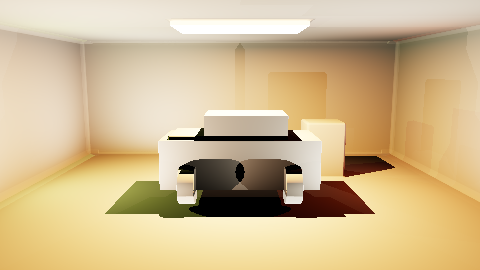
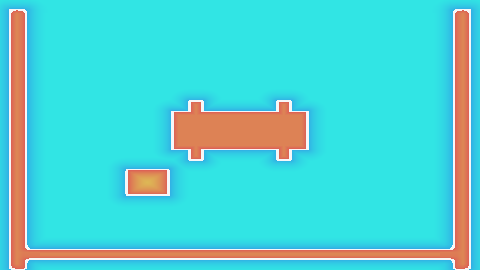
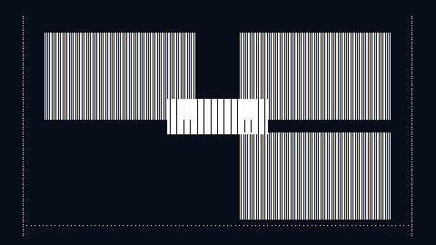
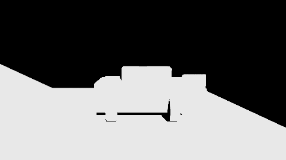
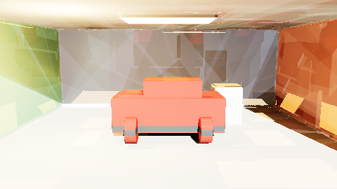
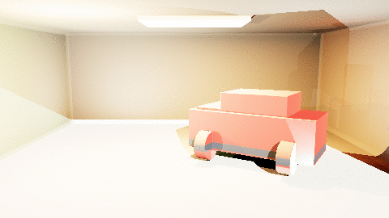

Static SDF Clipmap + Surface Cache — CPU Proof
Executed C++ CPU reference at 480 × 270. This page reports exactly what was exercised; it does not claim a GPU or production-engine integration.
Recorded execution
Loading
Output/metrics.json…g++ -std=c++20 -O3 -Wall -Wextra -Wpedantic -I. \ Exhibits/ClipmapLighting/ClipmapLightingValidation.cpp \ Engine/DistanceFieldSpace/ClipmapSurfaceCache.cpp \ -o _ClaudeScratch/clipmap-build/ClipmapLightingValidation _ClaudeScratch/clipmap-build/ClipmapLightingValidation Exhibits/ClipmapLighting/Output
Visual inspection record
| Observed in the actual captures | Verdict |
|---|---|
| All listed render images have the requested 480 × 270 dimensions. The combined image is finite according to the C++ scan; the scan also recorded a nonzero mean luminance and no bright-pixel overflow above its stated HDR threshold. | Verified for this CPU run |
| Images are stable and contain no stochastic grain: the path reference is fixed 16-direction Sobol hemisphere quadrature with two diffuse bounces, no PRNG, no temporal accumulation, and no denoiser. | Verified method; not a general unbiased production path tracer |
| The vehicle, room, hard silhouettes, clipped foreground floor, overexposed ceiling region, and simple diffuse transport are visibly non-photoreal. The penumbra debug image is an SDF diagnostic rather than a visual-quality approval. | Not acceptable evidence of “absolute realism” |
| Source-specific GI images are emitted separately below. Sun and point-cache contributions are materially dimmer than the area/emissive capture in this scene; that is visible rather than hidden. | Demonstrates routing, not a quality sign-off |
Lighting proof — no display denoiser





SDF and cache debug proof



Deterministic path reference and local vehicle motion


Architecture covered by this reference
| Implemented in C++ | Evidence / contract | Not claimed |
|---|---|---|
| Three Float32 static distance clipmap levels, 128³ samples each | Static scene is baked once around a fixed anchor; tri-linear sampling picks the first containing level. | Sparse streaming, scroll updates, GPU clipmap textures, brick residency, or a mesh baker. |
| Hybrid local vehicle SDF | Vehicle is evaluated in local coordinates after yaw transform and unioned at query time with static clipmap distance. | Vehicle mesh asset, skinned deformation, BLAS/TLAS, or collision production code. |
| Nine surface cards | Four floor cards avoid one moving vehicle shadowing the whole floor injection; walls, emitter, and moving vehicle card are retained. | Automatic card extraction, surfel allocation, feedback, residency, or multi-bounce convergence. |
| Sobol hemisphere cones + card gather | Sixteen fixed spherical-cap Sobol directions perform deterministic cone accessibility; card gather prevents a narrow emitter being missed by that finite direction set. | Unbiased Monte Carlo estimator or error-bounded physically exact global illumination. |
| SDF penumbra diagnostic | Cubic-smoothed cone visibility is rendered and retained as 10_sdf_penumbra.png. | Replacement for production shadow maps/ray queries. It was not used as the production-quality shadow claim. |
Current-blocking audit findings
- The provided checkout initially contained no C++ rendering host, Vulkan resource lifecycle, Slang toolchain, CMake executable, vehicle asset, or existing SDF/GI/path-tracer implementation to wire into. The GPU step therefore remains unimplemented, not simulated.
- The linked upstream branch was inspected at
c205cb698288ccd90bf909e25e28ce28d48d0dfa. ItsSignedDistanceVolumeis a single sparse narrow-band volume rather than a scrolling clipmap. Its cone-GI shader samples sky radiance rather than a general surface cache. Its deterministic tracer is experimental WebGPU/WGSL, not a C++ Vulkan integration. These are reasons it was not copied in as a claimed replacement. - The only measured speedup is the clearly scoped dynamic-distance maintenance comparison: a full three-level static-plus-vehicle rebake versus a local vehicle/card refresh. It does not establish a whole-renderer GPU speedup, 60 FPS, 120 FPS, or hardware parity.
- Because there is no measured real photograph, calibrated HDRI, physical material asset, or GPU reference here, no “fake versus real” or absolute-realism claim is made.